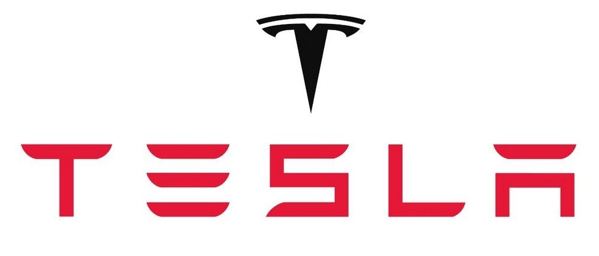
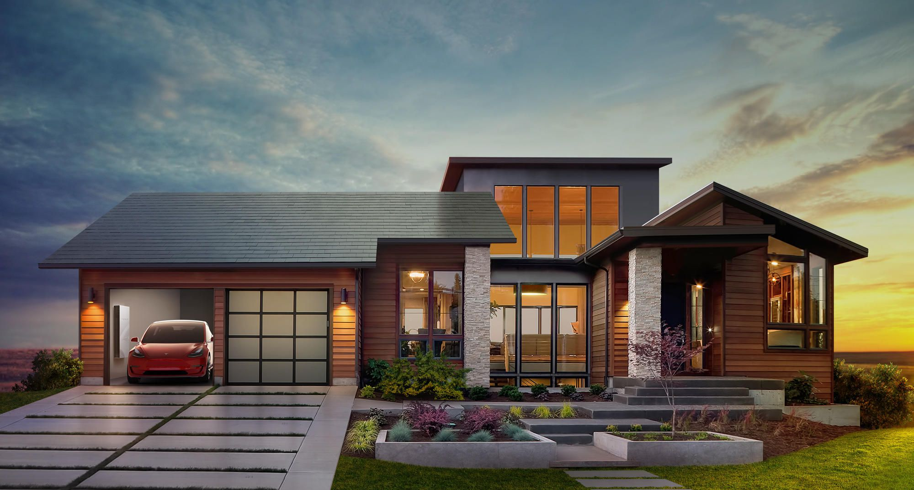
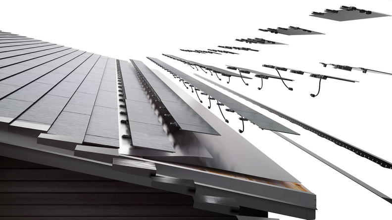
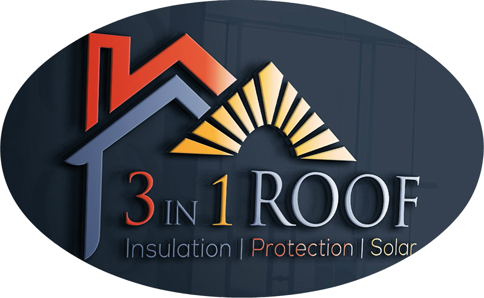
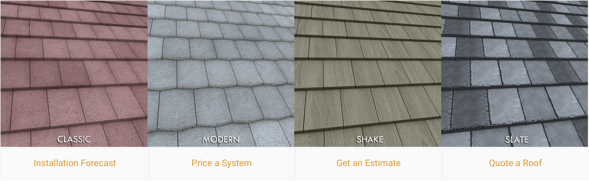

The innovation of solar electric power is necessary because conventional renewable technologies have low efficiency and high costs. Nowadays, only radical innovation can successful improve solar power’s comparative advantage in the energy market and tackle climate change.
At the end of October 2019, Tesla launched the Tesla Solar Roof V3, which is called Solarglass Roof (Tesla, 2019). According to Tesla (2019), Solarglass Roof’s tiles are made from “tempered glass”, which is three times stronger than standard roofing tiles to withstand weight and pressure. This new version has faster installation speed, cheaper production costs, and higher power density (Tesla, 2019). The combination of roof tiles and solar panels not only provide a safe and entire roof but also generate energy for the whole building (Tesla, 2019). Tesla always focuses on both the technical improvement and the aesthetic value for the solar roof (Richardson, 2019). After installing the Tesla Solar Roof, householders do not need to install conventional solar panels on the roof, which are usually aesthetic unappealing (Richardson, 2019). Tesla (2019) says the new Tesla Solarglass Roof has 25 years power warranty. Customers can control the solar roof system by using the Tesla app (Tesla, 2019).
  3 IN 1 ROOF Inc. creates the “world’s first insulating solar roof tile” (3 IN 1 ROOF, 2019). Its name comes from three features, “insulation, protection, and solar” (3IN1ROOF, 2019). According to 3IN1ROOF (2019), its insulating tile materialization reduces up to 38% BTU consumption needs before producing energy. These savings are from “heating and cooling” BTU consumptions for the whole building because insulated tiles can keep the attics cool forever (3IN1ROOF, 2019).
3IN1ROOF (2019) says traditional solar panels on the roof have a 15% - 17% energy efficiency. The 3 IN 1 ROOF is usually as efficient as conventional solar panels between morning and afternoon (3IN1ROOF, 2019). Nevertheless, 3IN1ROOF (2019) believes if the temperature is about 88-90 °F, after 3 p.m., its insulated solar roof will be able to generate 23% energy efficiency because the insulated solar roof has heat resistant closed cell foam to prevent the decrease in solar functionality caused by increasing surface temperature. However, 3IN1ROOF (2019) argues that traditional solar panels may have up to 50% negative efficiency impact caused by high surface heat. Also, 3 IN 1 ROOF’s durable foam materialization improves its life expectancy by 300% (3IN1ROOF, 2019). Compared with conventional tiles, 3 IN 1 ROOF has more cost advantages because of its 8x lighter roof load reduces material costs for foundations and walls (3IN1ROOF, 2019).
3 IN 1 ROOF gets international demands from the world bank for 500k housing, Kenya for 80k residential units, the Bahamian Government, the Jamaica Government, the Australia Advance Building Supplies Group, and the Santiago Mexico’s Allende Villa Development (North American Clean Energy, 2019).
 Forward, Inc. (2019), on its website, shows the model of the Forward Solar Roofing, which has five layers. Similar to Tesla Solarglass Roof, the first layer is covered by strong tempered glass that can withstand hail strikes. The second layer is the “chromatic cloaking” (Forward, 2019) with eight colors available. It can show the solar roof’s aesthetic values and, at the same time, maintain high efficiencies. The third layer has “monocrystalline solar cells” (Forward, 2019). The fourth layer has “galvanized metal panels” (Forward, 2019). This roll-formed metal upgrades the energy density. The solar roofing “has a higher energy density (19 watts/ ft2) than other solar panels (11 watts/ ft2)”(Forward, 2019), which increases energy production within limited roof space. The fifth layer has a “concealed racking system” (Forward, 2019).
Forward Inc. shows its social responsibility by recycling the old roofs they removed. They partner with asphalt recycling facilities to recycle “asphalt shingles”, they removed for paving roads (Forward, 2019). Also, Forward (2019) says there are 30 years of weatherization warranty for its solar roofing.
To avoid traditional solar panels’ decrease in solar functionality caused by increasing surface temperature, Forward’s solar roofing uses a venting system to optimizes the space between the panel and the deck of the roof so that more cool air can come in and keep the panel cool during hot summer days (Forward, 2016).